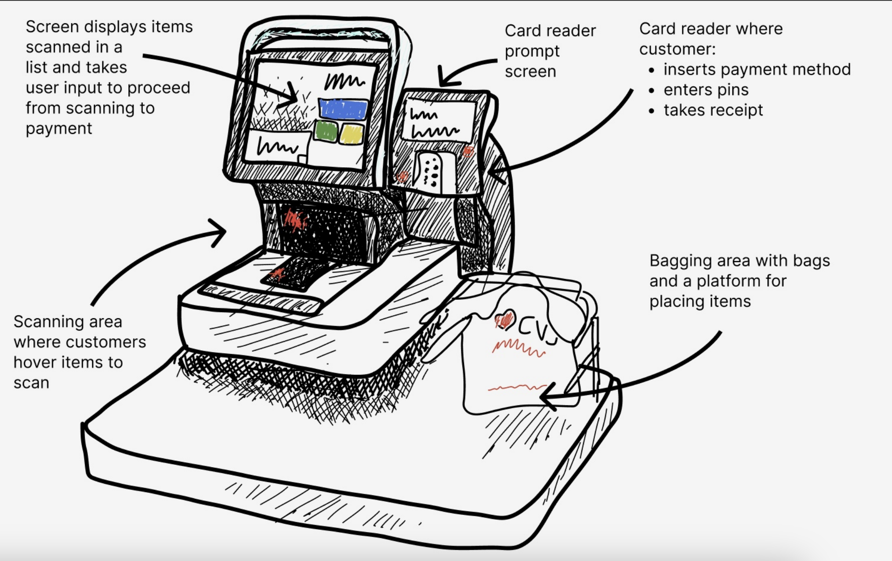
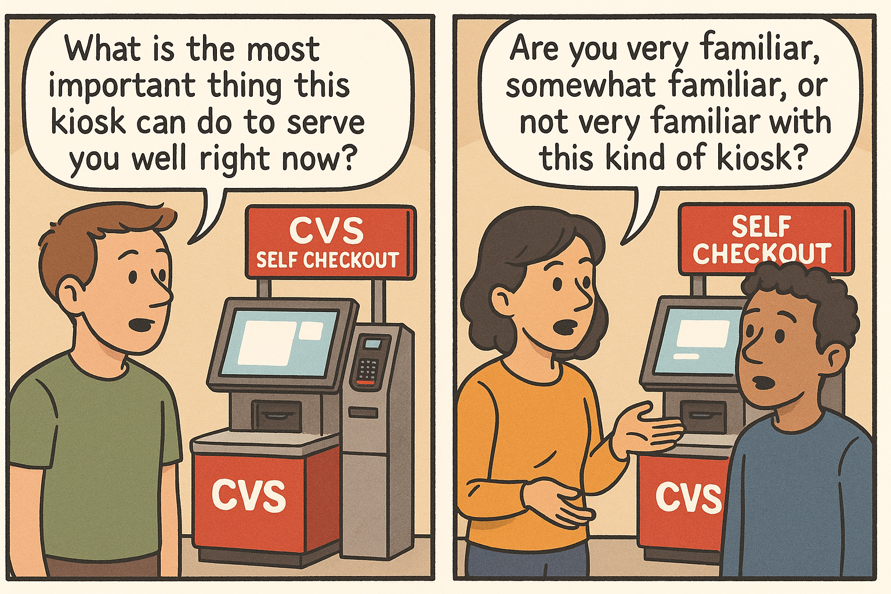
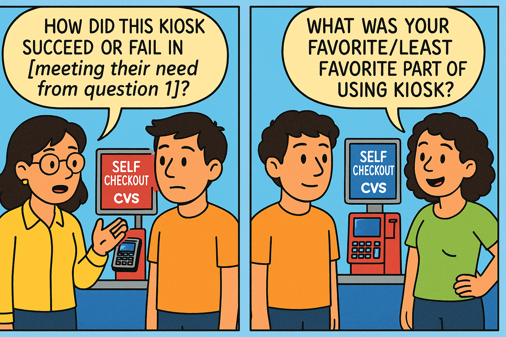
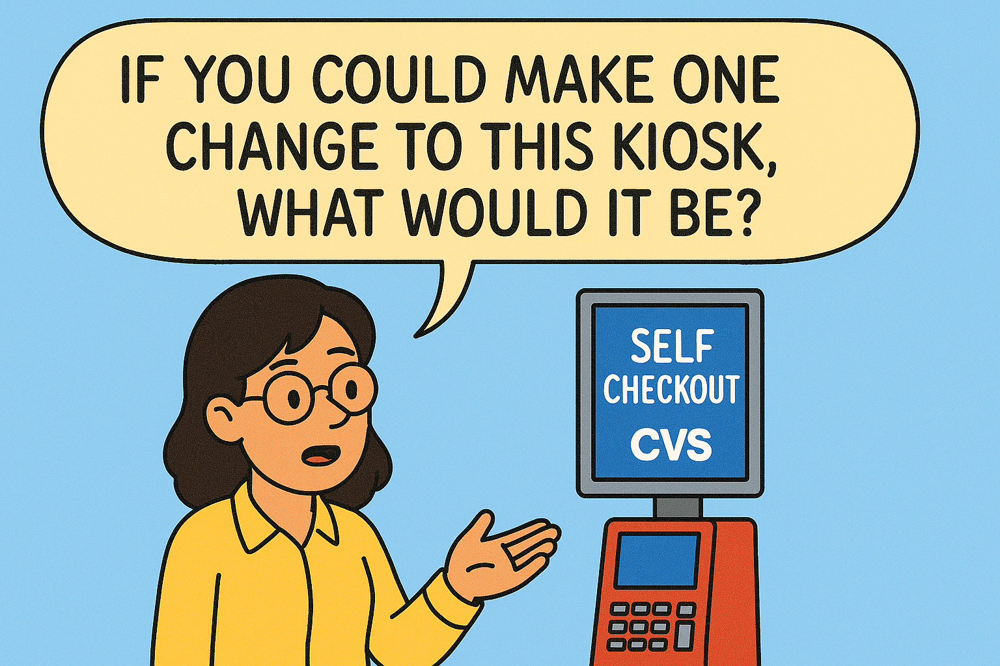
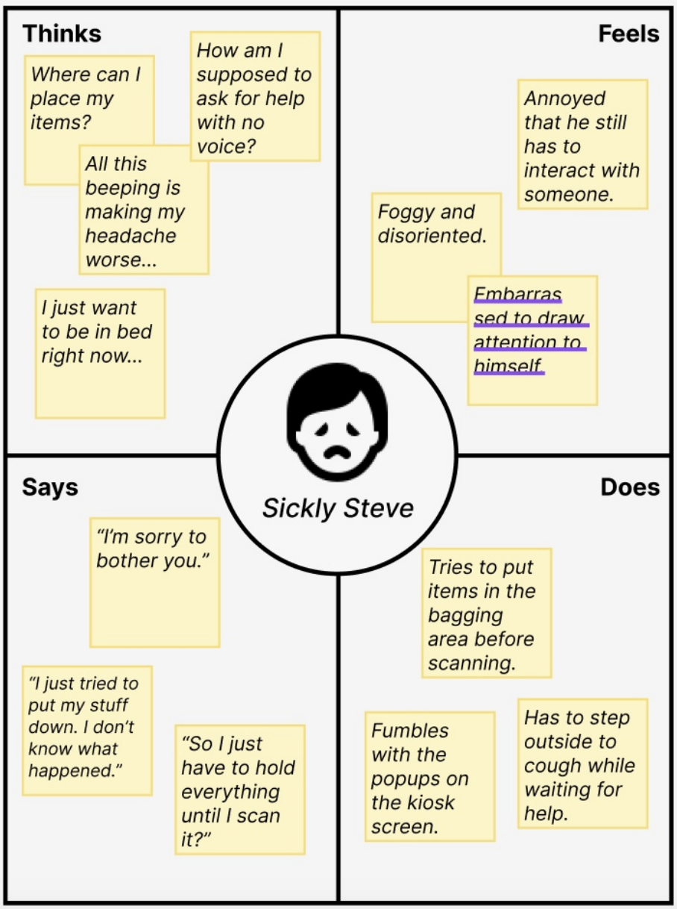
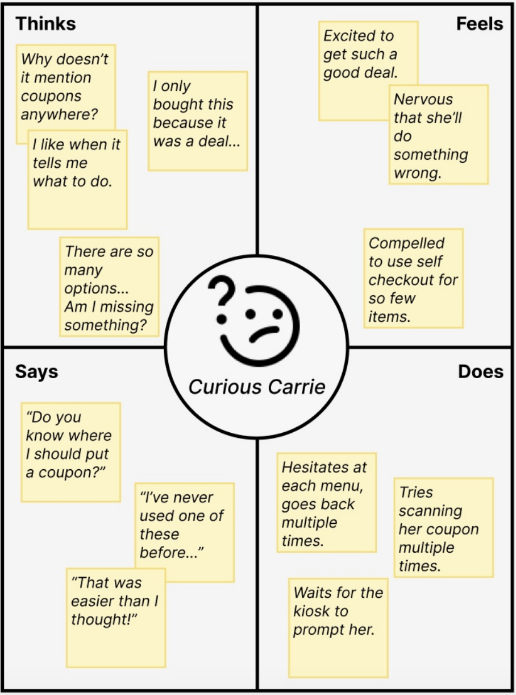
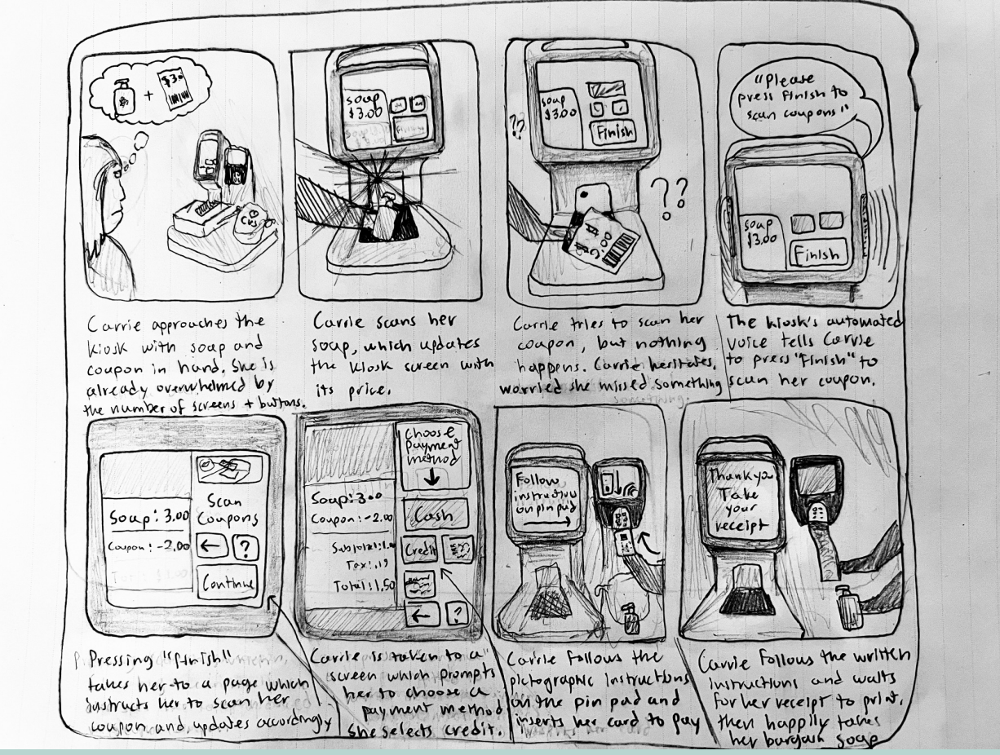

Designing for Users, Not Assumptions
In game design, like most other kinds of design, it’s crucial to consider a
diverse
set of users. Players with vision impairments might benefit from a narrated tutorial, while lefties appreciate the option to rebind key commands; some players want a casual experience, while others revel in harsh competition, making multiple game modes a must.
Designing an interface meant to be used by hundreds, thousands, or millions of users means accommodating the variability of the human experience. Assumptions can be a decent starting point, but are inevitably clouded by bias. The only way to effectively gauge an audience is to collect empirical information about it. In this project, I will show you how I used observations of real users of self-checkout kiosks to build a set of hypothetical profiles called ‘personas’.
Designing an interface meant to be used by hundreds, thousands, or millions of users means accommodating the variability of the human experience. Assumptions can be a decent starting point, but are inevitably clouded by bias. The only way to effectively gauge an audience is to collect empirical information about it. In this project, I will show you how I used observations of real users of self-checkout kiosks to build a set of hypothetical profiles called ‘personas’.
The Self-Checkout Kiosk
I chose a self-checkout kiosk for my project because they are a public interface built almost expressly to be accessible. Kiosks employ a variety of strategies to help users navigate what can be a complicated process, making them ideal subjects for the kind of observation and analysis I planned on doing. I observed a self-checkout kiosk in a CVS near me. Below is an annotated sketch of the interface.

Sketch of a CVS self-checkout kiosk. Kiosks are positioned at the front of the store and are easily visible and accessible.
Formulating Questions
Observation alone can be valuable, but to get a fuller picture of how users experienced their interactions, what they would change, and why, a designer must ask careful questions. Below are the five questions I asked users of the CVS kiosks.

The first an second questions I asked, respectively, asked prior to the interaction.
I asked these questions before the users started with the kiosks. Their purpose is to gather some context for the user's interactions with the kiosk. Understanding their comfort with and expectations of the system might help contextualize their later responses.
I asked these and other remaining questions after people had finished using the kiosk. I kept the questions open-ended/flexible for two reasons. First, in general, the less users remember about the particulars of their experiences, the better. Second, I wanted to remove my own biases about what users should pay attention to or expect; by keeping questions neutral, I minimize contamination of the results.

The third and fourth questions, respectively, asked after the interaction.

The fifth and final question.
The purpose of the final question is to get direct feedback from users about what they would change. It’s useful to get this perspective from those not involved in the creation of an interface, because they might think outside of the box or suggest things the designer would have otherwise discounted. It can also provide useful context to earlier answers.
Observations
I observed and interviewed three users. Below are my observations about their interactions and their responses to my questions.
General Observations
All three users had brief and efficient interactions with the CVS self-checkout kiosks, typically scanning only a few items before quickly paying and leaving. Their process was mostly consistent—scan, place items in the bagging area, pay, and bag—while other actions, like applying coupons, were integrated smoothly. In moments of hesitation, users were guided by timely audio cues or on-screen prompts, which generally prevented them from getting stuck.
Responses to Interview Questions When asked what was most important, all users emphasized ease and efficiency, particularly the user using a coupon. Familiarity with kiosks varied: one had little experience, one had used similar kiosks elsewhere, and one was somewhat familiar. Most felt the kiosk met their needs, though issues arose—overwhelming screen options, loud audio cues, and one user triggering a lockup by misplacing items, which led to frustration. While users generally found the kiosk intuitive and unsurprising, one enjoyed the musical jingle at checkout. Favorite aspects included speed and independence, while the least favorite included sensory overload and impersonal error handling, especially when things went wrong.
Responses to Interview Questions When asked what was most important, all users emphasized ease and efficiency, particularly the user using a coupon. Familiarity with kiosks varied: one had little experience, one had used similar kiosks elsewhere, and one was somewhat familiar. Most felt the kiosk met their needs, though issues arose—overwhelming screen options, loud audio cues, and one user triggering a lockup by misplacing items, which led to frustration. While users generally found the kiosk intuitive and unsurprising, one enjoyed the musical jingle at checkout. Favorite aspects included speed and independence, while the least favorite included sensory overload and impersonal error handling, especially when things went wrong.
Using the Data: Personas
Some firms have the resources to conduct massive surveys and gather hundreds or thousands of responses. Here, I was only able to interview three people. In my experience with game design, I have conducted playtest sessions with groups of up to ten---bigger, but still not anywhere near representative of my entire audience. In situations like these, one must get creative to make good use of their observations.
One such strategy is to construct personas, hypothetical individuals made up of combinations of attributes from the real interviewees. This way, one can construct many likely experiences from just a few direct observations. The weakness, of course, is that bias will inevitably creep into the personas, but it’s much more robust than simple conjecture.
I created two personas, Carrie and Steve, as shown below.
One such strategy is to construct personas, hypothetical individuals made up of combinations of attributes from the real interviewees. This way, one can construct many likely experiences from just a few direct observations. The weakness, of course, is that bias will inevitably creep into the personas, but it’s much more robust than simple conjecture.
I created two personas, Carrie and Steve, as shown below.
Steve is a university student who has come down with the flu. He is stressed, disoriented, and wants to avoid human contact.
Steve’s mind is foggy, and he is easily overwhelmed by visual/audio stimulus. The auto request help feature stresses him out. He is fatigued and wants to set his items down, so the stringent but unwritten rules about placing items in the bagging area frustrates him.
Steve represents a user with little patience for inconveniences. He wants to be done as quickly and easily as possible. His sickness exacerbates these qualities, but many users might feel similar to him. Self-checkout kiosks are meant to facilitate efficiency, so it should meet his needs.
Steve’s mind is foggy, and he is easily overwhelmed by visual/audio stimulus. The auto request help feature stresses him out. He is fatigued and wants to set his items down, so the stringent but unwritten rules about placing items in the bagging area frustrates him.
Steve represents a user with little patience for inconveniences. He wants to be done as quickly and easily as possible. His sickness exacerbates these qualities, but many users might feel similar to him. Self-checkout kiosks are meant to facilitate efficiency, so it should meet his needs.


Carrie is a recent graduate who is always looking for ways to save money. Her
roommate gave her a coupon for soap from CVS.
Carrie is a naive user. Her unfamiliarity and the thought of wasting money makes her anxious. She is overwhelmed by the number of options presented to her and relies extensively on visual and audio cues. She likes that the kiosk gives her multiple opportunities to call for help.
Carrie represents a user who is unfamiliar with the interface and has a specific usecase in mind. She is the user who needs the interface to tell her exactly what to do. Self-checkout kiosks are meant to be intuitive for a wide array of users, so it should meet her needs.
Carrie is a naive user. Her unfamiliarity and the thought of wasting money makes her anxious. She is overwhelmed by the number of options presented to her and relies extensively on visual and audio cues. She likes that the kiosk gives her multiple opportunities to call for help.
Carrie represents a user who is unfamiliar with the interface and has a specific usecase in mind. She is the user who needs the interface to tell her exactly what to do. Self-checkout kiosks are meant to be intuitive for a wide array of users, so it should meet her needs.
Using Personas: Storyboarding
Personas work particularly well when used in conjunction with storyboards. Storyboards are short sequences of images representing a user interaction from start to finish. Personas can then be placed in context and used to illustrate how a certain set of users might experience an interface. The visual component of storyboarding adds a vital dimension to personas, which can otherwise be flat and narrow.
Below is a simple storyboard I created featuring Curious Carrie, one of the personas above.
Below is a simple storyboard I created featuring Curious Carrie, one of the personas above.

The storyboard depicts Carrie using the kiosk to scan a coupon for soap. The panels depict her entire experience, from first scanning her soap to making the final payment. Each step of the process is meant to accentuate how Carrie's traits make her experience of the kiosk unique.
Final Thoughts
As a game designer, observation and player feedback are critical to my workflow. Games are complex, and it’s impossible to anticipate every user and interaction. Thus, designers must employ a variety of tools to assess them in real time. A/B testing with statistical analysis can reveal much about the quality of an interface. In fact, that kind of statistical analysis might do a fine job assessing changes to the CVS self-checkout kiosk, where the metrics of success are relatively straightforward. However, designers like me looking to elicit an emotional or intellectual response in the user, must go deeper. To know if a player was appropriately terrified by a horror game’s final boss, the designer has to ask.
I am always looking for ways to better understand my audience. Given my limited resources, tools like personas and storyboards are useful compromises that allow me to maximize the data I can collect with minimal unfounded assumptions. My experience using them to assess the CVS kiosk has shown me how versatile they can be; even when other methods of assessment might be effective, the kinds of insight you get from asking questions can’t be replaced.
I am always looking for ways to better understand my audience. Given my limited resources, tools like personas and storyboards are useful compromises that allow me to maximize the data I can collect with minimal unfounded assumptions. My experience using them to assess the CVS kiosk has shown me how versatile they can be; even when other methods of assessment might be effective, the kinds of insight you get from asking questions can’t be replaced.